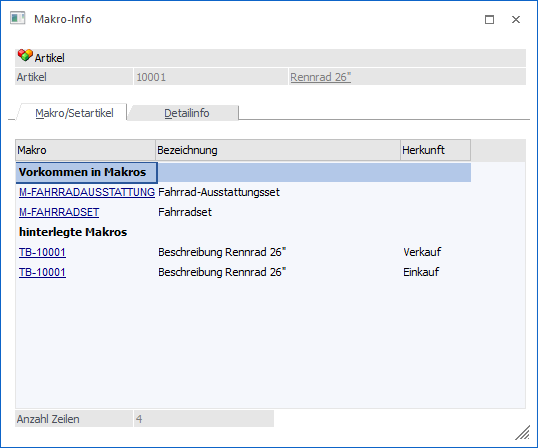
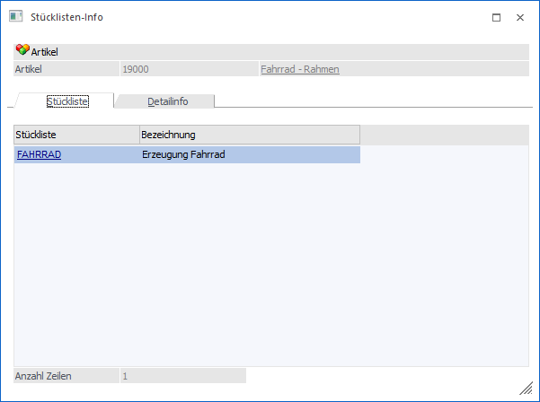

In dem Fenster "Makro-Info/ Stücklisten-Info" kann sich der Anwender alle Makros/Textbausteine bzw. Stücklisten die im Artikel hinterlegt wurden oder in denen der Artikel enthalten ist anzeigen lassen. Wird das Fenster aus einem Makro/Textbaustein oder einer Stückliste heraus aufgerufen, werden entsprechend alle Artikel angezeigt, in denen das gewählte Makro, der Textbaustein oder die Stückliste hinterlegt wurde.
Das Fenster Makro-Info bzw. Stücklisten-Info kann in folgenden Programmbereichen aufgerufen werden:
ü WinLine FAKT - Stammdaten - Artikelstamm - Artikel - Button "Makros/Setartikel"
ü WinLine FAKT - Stammdaten - Artikelstamm - Makros - Button "Info"
ü WinLine FAKT - Stammdaten - Artikelstamm - Textbausteine - Button "Makroinfo"
ü WinLine PPS - Stammdaten - Stückliste - Button "Artikel mit aktueller Stückliste"
Tabelle "Makro-Info"
Wird das Fenster über den Artikelstamm aufgerufen, befinden sich die beiden Unterregister "Makro" und "Detailinfo" oberhalb der Tabelle. Wird das Fenster jedoch über "Artikel - Makros" bzw. "Artikel - Textbausteine" aufgerufen, werden keine Unterregister dargestellt und die Ansicht gleicht der aus dem Register "Detailinfo".

Register "Makro/Setartikel"
Im Register "Makro/Setartikel" werden alle Makros, in denen der Artikel enthalten ist, unter dem Punkt "Vorkommen in Makros" aufgelistet. Alle Makros/Textbausteine die im Artikel hinterlegt wurden, werden unter dem Punkt "hinterlegte Makros" angezeigt.
Folgende Spalten sind in der Tabelle der Makro-Info unter dem Register "Makro/Setartikel" enthalten:
Ø Makro
In der Spalte "Makro" ist der Name des Makros/Textbausteins als DrillDown hinterlegt und kann durch einen Klick geöffnet und ggf. direkt editiert werden.
Ø Bezeichnung
In der Spalte "Bezeichnung" befindet sich die im Makro/Textbaustein hinterlegte Bezeichnung.
Ø Herkunft
Die Spalte "Herkunft" gibt Auskunft darüber, ob es sich um ein Verkaufs- oder Einkaufsmakro handelt.
Register "Detailinfo"
In das Register "Detailinfo" kann gewechselt werden, wenn ein Makro aus dem Register "Makro/Setartikel" angewählt wurde. Bei Textbausteinen ist dies nicht möglich. In der Detailinfo werden die im Makro enthaltenen Artikel bzw. Objekte angezeigt.
Folgende Spalten sind in der Tabelle der Makro-Info unter dem Register "Detailinfo" enthalten:
Ø Typ
Die Spalte "Typ" gibt Auskunft darüber, um was für ein Objekt es sich handelt.
Ø Artikelnummer
In der Spalte "Artikelnummer" wird die Artikelnummer eines Artikelobjekts als DrillDown angezeigt.
Ø Bezeichnung
In der Spalte "Bezeichnung" wird die Bezeichnung des Artikels bzw. des Objekts dargestellt.
Tabelle "Stücklisten-Info"
Wird das Fenster über den Stücklistenstamm aufgerufen, befinden sich die beiden Unterregister "Stückliste" und "Detailinfo" oberhalb der Tabelle. Wird das Fenster jedoch über den Stücklistenstamm in der WinLine PPS aufgerufen, werden keine Unterregister dargestellt und die Ansicht gleicht der aus dem Register "Detailinfo".

Register "Stückliste"
Im Register Stückliste werde alle Stücklisten in denen der gewählte Artikel vorkommt aufgelistet. Wird das Fenster aus einer Stückliste heraus aufgerufen, werden entsprechend alle Artikel angezeigt, in denen die gewählte Stückliste hinterlegt ist.
Folgende Spalten sind in der Tabelle der Stücklisten-Info enthalten:
Ø Stückliste
In der Spalte "Stückliste" ist der Name der Stückliste als DrillDown hinterlegt und kann durch einen Klick geöffnet und ggf. direkt editiert werden.
Ø Bezeichnung
In der Spalte "Bezeichnung" wird die in der Stückliste hinterlegte Bezeichnung angezeigt.
Register "Detailinfo"
In das Register "Detailinfo" kann gewechselt werden, wenn eine Stückliste aus dem Register "Stückliste" angewählt wurde. In der Detailinfo werden die in der Stückliste enthaltenen Artikel bzw. Objekte angezeigt.
Folgende Spalten sind in der Tabelle der Stücklisten-Info unter dem Register "Detailinfo" enthalten:
Ø Typ
Die Spalte "Typ" gibt Auskunft darüber, um was für ein Objekt es sich handelt (z. B. Artikel oder Tätigkeit).
Ø Artikelnummer
In der Spalte "Artikelnummer" wird die Artikelnummer eines Artikelobjekts als DrillDown oder der Name von anderen Objekttypen angezeigt.
Ø Bezeichnung
In der Spalte "Bezeichnung" wird die Bezeichnung des Artikels bzw. des Objekts dargestellt.